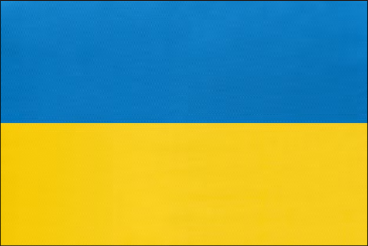

Consortium


Andrii Kralevych
Environmental Chemistry Lead
Coordinator & WP3 Lead – Environmental Chemistry expert with experience in water toxicity and ISO 17025 laboratory methods.
Sergii Vashchenko
AI & Data Analytics
Lead WP2 – Data Scientist focused on ML for environmental monitoring and FAIR data pipeline design.
Andrii Gaponenko
UAV Systems Engineer
Lead WP1 – UAV systems engineer with background in mechatronics and custom drone integration.
GreenSky Robotics
Industry Partner
Industry Partner – Drone manufacturer providing CE-certified airframes and automated battery swap systems.